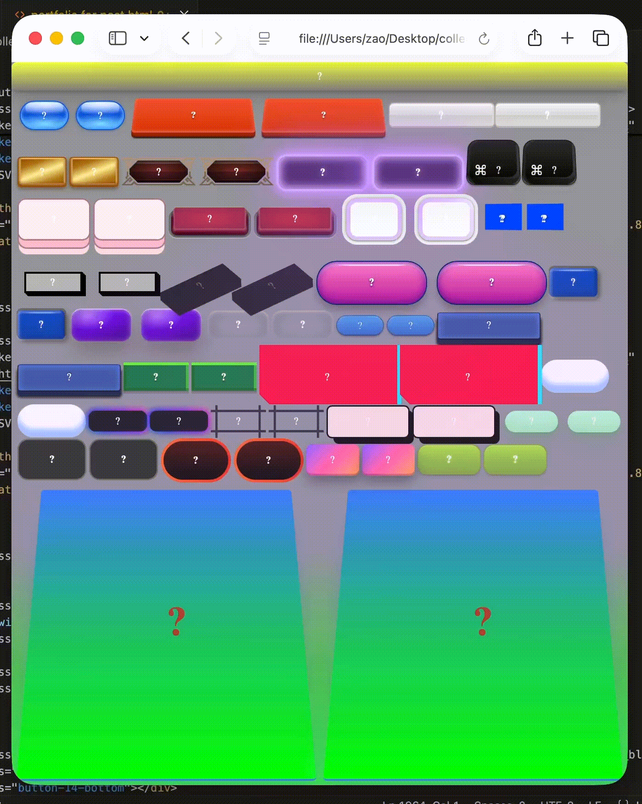

ziming ao
cookieblock2023@proton.me
@ziming_ao
Be reminded how blessed you are every day with this inspiring daily calendar. This golden and
moti-vational calendar has a year full of inspirational truths, the truth social posts from president trump
that encourage your daily life.
pages are printed twice, first time riso printed the golden decorational layer, second time laser
printed text layer.
SUGGESTION FOR YOU is a series of book-like screen-printed pieces created
on plastic, wooden, and
ceramic plates.
In this work, I recreated the “books” from book design posts that were suggested in my Instagram feed. The
rule I set for myself was to rely only on my memory—I wasn't allowed to revisit the original posts. As a
result, the text in my versions does not make sense, since I could not recall the original content, and many
design details differ from the originals.
Beyond design, material choice also became an issue. On Instagram, books are often presented as clean,
cube-like objects with covers, or sometimes only as scanned images of their covers. Based on these images, I
can only assume they are made of paper. But is that assumption necessarily true? In my recreation, I
responded to this uncertainty by using alternative materials that are not commonly associated with books.
screen printing is an important part of this project. it requires manual actions, which are always imperfect
and therefore visible from the results: the text is often blurry, color is uneven, contents on different
sides are misaligned, and ink frequently attracts dirt.
this project is about the process of digital posts permeate our design practices, along with their
limitations.complete collection of SUGGESTION FOR YOUin this my first typeface design, i deconstruct the letters into parts by how visually they look
without considering how
they are written, and rebuild new-structured letters by using two different type of hand-drawn lines.
because of huge contrast of thin line(initial inspiration is curves of hair) and chaotic line, the structure
of letter became more unbalanced and unrecognizable.
this typeface has three different weights and for each weight I designed five different variations(not shown
in this post), to have more possibilities of typography.
typeface poster
A series of posters about punctuation. All the posters are photographic images without digital editing. The
play with perspective is inspired by Jan Dibbets. the shooting process
parkett is a contemporary art magazine. in 2017 it published its closing print issue in response to
people's
digital reading habits.
therefore, blending parkett's print legacy with digital content is basic concept of this redesigned edition:
original articles appear right-side up; flipped, they reveal embedded social media snippets from instagram,
pinterest, or google. mismatched images and false footnotes disrupt expectations, mirroring online
information's unreliability—a reflection of how we consume art today.
back cover
product information (I AM VISIBLE)
a zine inspired by Katarina Jazbec's YOU CAN'T AUTOMATE ME (2021), a flim about the port workers.
port workers usually need to wear various safety gear, such as safety shoes, helmets, and gloves. however,
in a port filled with stacked shipping containers, faced with iron sheets, steel bars, and concrete, these
protective measures seem insignificant. confronted with these industrial machines and materials, we truly
see the fragility of the human body.
at the same time, when workers put on their uniforms, what we see are prepared workers, not individuals with
their own emotions and experiences. work uniforms objectify us.
based on these ideas, in this zine, I want to express the vast gap between humans and machines, humans and
products, and how we fall into the trap of dehumanization.
a book about people in bed. the pages follow both chronological order and the activities of people,
from being awake (printed on yellow paper) to sleeping (printed on white paper and folded inside).
content images originate from rijksmuseum archive.
"you don't really hate trump, karen. you're just stupid."
calendar for my chaotic 2023, from 1st to 365th day
why do i feel so sad is a type specimen that explores extremes of human body as a tool to compose
letters. i put white thread in my mouse, and try to compose letters out of it, only with the help my tongue.
it's the reason why some letters are lack of legibility. and thanks to everyone that i took photos with.
jiwon with the specimen
room r1.08 packed in plastic trashbagdrawings of swearing words engraved on golden pyramid, written wishes of people screen printed on toilet
paper, after ten thousand years, would “fuck you” be more important than euro, skating, chanel bag, tesla
truck, porsche gt3, soo kim's curry, bjork's house, solo exhibition in moma, engineering position in aston
martin?
the upper part of pyramid is ceramic covered with sheet gold, the down part is made of cardboard and toilet
paper.dancing diva (eyes grown on hands version)
how would we dance if our eyes were grown on our hands?
project “toilet” focused only on toilet, an white and ceramic object.
started same as previous works, i took photos of every inch of toilet, collaged these images to construct a
complete toilet on paper.
in the next step, i evened the difference of light, which caused difference of brightness and darkness in
photo, toilet became a white color block.
after this i changed the medium of work(from paper to ceramic, which is normally the raw material of
toilet), to get a flattened ceramic toilet, and originally it should be one piece of white ceramic
piece(similar with image 4), but it was broken into pieces accidentally.
and i collaged the original photos three dimensionally.
at the end, i replaced the paper photo with ceramic plates that has same shape, built a three dimensional
ceramic toilet. same as the toilet we see, it's touchable, white and made of ceramic. the camera, became a
transfer point of these two toilets.

web with full of buttons